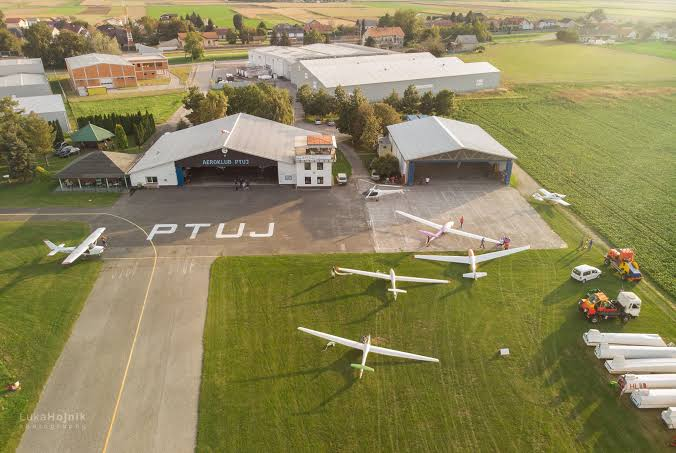

Začetniki in osnovnošolci
Mladi tehnični navdušenci se pri nas naučijo osnov obdelave lesa (balze), branja načrtov in prvih korakov upravljanja šolskih RC modelov prek sistema dvojnih komand (učitelj-učenec).
Lokalna skupnost ljubiteljev gradnje in letenja z radijsko vodenimi letalskimi modeli v Spodnjem Podravju in Halozah.
Modelarska sekcija deluje v okviru Aerokluba Ptuj na športnem letališču v Moškanjcih. Združujemo navdušence nad letalskim modelarstvom, aerodinamiko, elektroniko in mehaniko. Naš glavni namen je ohranjanje tehnične kulture, prenos znanja na mlajše generacije ter varno izvajanje letenja z radijsko vodenimi (RC) modeli letal in jadralnih modelov.

Naša vrata so odprta vsem generacijam iz Ptuja, Haloz in širše okolice, ne glede na predznanje:
Mladi tehnični navdušenci se pri nas naučijo osnov obdelave lesa (balze), branja načrtov in prvih korakov upravljanja šolskih RC modelov prek sistema dvojnih komand (učitelj-učenec).
Za vse, ki želijo povezati znanje elektrotehnike, mikrokrmilnikov, telemetrije in 3D-tiska z dejanskim preizkušanjem modelov na terenu.
Člani z lastnimi modeli pridobijo dostop do urejene in pokošene vzletno-pristajalne steze, registriranega modelarskega območja ter družbe kolegov v kategorijah F5J in F3A.